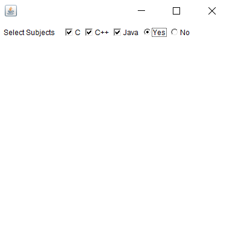

8. Java Program to Create Check Boxes and Radio Buttons
//Get and Set State and Get Label of a Check Box
import java.awt.*;
import java.awt.event.*;
class CheckboxRadio extends Frame
{
private Label l = new Label("Select Subjects");
private Label l2 = new Label("Confirm");
private Checkbox cb = new Checkbox("C");
private Checkbox cb1 = new Checkbox("C++");
private Checkbox cb2 = new Checkbox("Java");
private Checkbox cb3 = new Checkbox("Yes");
private Checkbox cb4 = new Checkbox("No");
private CheckboxGroup cbg = new CheckboxGroup();
CheckboxRadio()
{
setBounds(100,100,400,400);
setLayout(new FlowLayout(FlowLayout.LEFT));
cb3.setCheckboxGroup(cbg);
cb4.setCheckboxGroup(cbg);
add(l);
add(cb);
add(cb1);
add(cb2);
add(cb3);
add(cb4);
addWindowListener(new WindowAdapter() {
public void windowClosing(WindowEvent e)
{
System.exit(0);
}
});
setVisible(true);
}
}
class Main
{
public static void main(String[] args) {
new CheckboxRadio();
}
}
OUTPUT
